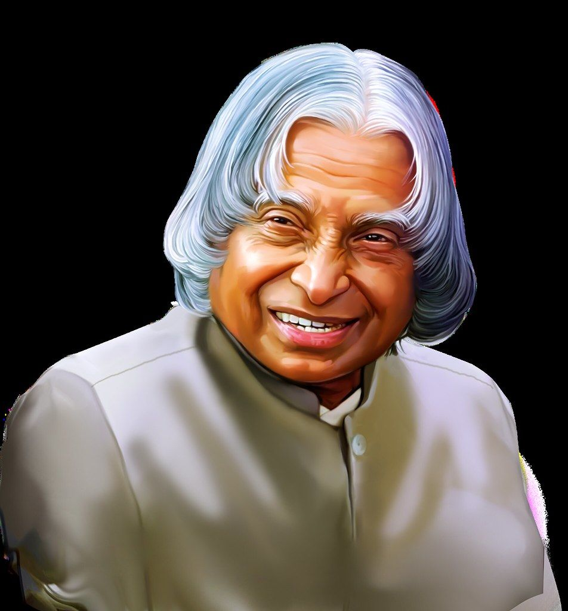

Biography

“Dream, dream, dream,
Transforms into thoughts,
Thoughts result into action”.
This was stated by visionary Dr. A.P.J. Abdul Kalam, the 11th President of India at a jam-packed hall in Kolkata on January 2, 2003 when he inspired thousands of school children to dream, to dream big, and let those dreams culminate in thoughts and actions. “Dream is not that which you see while sleeping, it is something that does not let you sleep,” the ‘people’s President’ had elaborated later.
Dr. Avul Pakir Jainulabdeen Abdul Kalam, internationally known as the “Missile Man of India”, was born on October 15, 1931 at Dhanushkodi in Rameswaram district of Tamil Nadu. He got his early education in his hometown, after which he graduated in science from St. Joseph’s College, Tiruchi. Thereafter, Dr. Kalam took his Diploma in Aeronautical Engineering from Madras Institute of Technology in 1954.
Dr. Kalam started his career with the Defence Research & Development Organisation (DRDO) in 1958 and served as a senior Scientific Assistant, heading a small team that was tasked with making a prototype hovercraft. After a four-year stint at DRDO, Dr. Kalam joined Indian Space Research Organisation (ISRO) and became a member of the satellite launch vehicle team at Thumba. Within a short time, he was appointed the Project Director of SLV-3.
Thereafter, Dr. Kalam focussed on development of nuclear potential of the country and proved his mettle by the successful nuclear tests at Pokharan, Rajasthan in May 1998.
Owing to his splendid achievements, he was widely honoured with a number of awards nationally and internationally. He was awarded Padma Bhusan in 1981, the Padma Vibhusan in 1990 and the H.K. Firodia Award for Excellence in Science & Technology in 1996. In 1997, Dr. Kalam was conferred “Bharat Ratna”, the nation’s highest civilian award.
He authored and co-authored many books such as ‘Wings of Fire’, ‘India 2020—A Vision For The New Millennium’, ‘My Journey’, ‘Ignited Minds—Unleashing the Power Within India’, etc.
His dedication to his duties can be gauged from the fact that he died while delivering a lecture to students in the Indian Institute of Management in Shillong, Meghalaya after a sudden cardiac arrest on July 27, 2015 at the age of 83. He was an outstanding scientist and a pioneer engineer who devoted his entire life to the nation and died while serving it. India continues to miss this great scientist as his traits and words of wisdom keep on inspiring one and all.
Made By Pankaj Chadda.